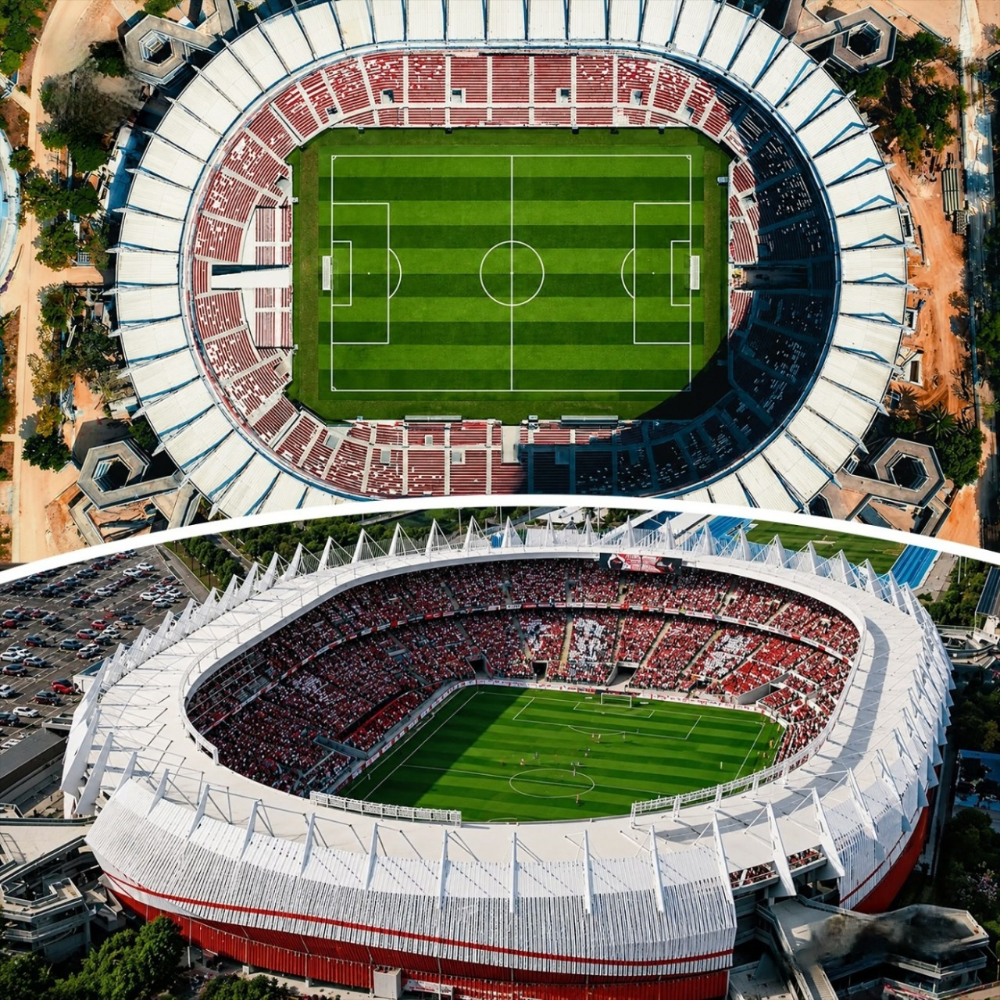

Martes 21 de julio
Nacional 0 - 3 Tigre
Universidad Central 1 - 4 Santos
Resultados, clasificados y próximos partidos de la competición.

Nacional 0 - 3 Tigre
Universidad Central 1 - 4 Santos
Sporting Cristal 0 - 0 Bragantino
Independiente Medellín 2 - 2 Vasco da Gama
Lanús 2 - 0 Cienciano
Bolívar 3 - 2 Grêmio
Independiente Santa Fe 2 - 0 Caracas
Boca Juniors 1 - 0 O'Higgins
19:00 h Tigre vs. Nacional
Estadio José Dellagiovanna, Buenos Aires. Resultado de ida: Nacional 0-3 Tigre.
21:30 h Santos vs. Universidad Central
Estadio Urbano Caldeira, Santos. Resultado de ida: Universidad Central 1-4 Santos.
19:00 h Vasco da Gama vs. Independiente Medellín
Estadio São Januário, Río de Janeiro. Resultado de ida: Independiente Medellín 2-2 Vasco da Gama.
21:30 h Cienciano vs. Lanús
Estadio Inca Garcilaso de la Vega, Cusco. Resultado de ida: Lanús 2-0 Cienciano.
21:30 h Bragantino vs. Sporting Cristal
Estadio Nabi Abi Chedid, Bragança Paulista. Resultado de ida: Sporting Cristal 0-0 Bragantino.
19:00 h Grêmio vs. Bolívar
Arena do Grêmio, Porto Alegre. Resultado de ida: Bolívar 3-2 Grêmio.
20:00 h Caracas vs. Independiente Santa Fe
Estadio Olímpico de la UCV, Caracas. Resultado de ida: Santa Fe 2-0 Caracas.
21:30 h O'Higgins vs. Boca Juniors
Estadio El Teniente, Rancagua. Resultado de ida: Boca Juniors 1-0 O'Higgins.
Tigre 1 - 2 Nacional
Tigre clasificó con un resultado global de 4-2.
Santos 4 - 2 Universidad Central
Santos clasificó con un resultado global de 8-3.
Vasco da Gama 1 - 0 Independiente Medellín
Vasco da Gama clasificó con un resultado global de 3-2.
Bragantino 1 - 0 Sporting Cristal
Bragantino clasificó con un resultado global de 1-0.
Cienciano 4 - 0 Lanús
Cienciano clasificó con un resultado global de 4-2.
Gremio 0 - 1 Bolivar
Bolivar clasificó con un resultado global de 4-2.
O'Higgins 1 - 0 Boca Juniors
Boca Juniors clasificó tras ganar 4-3 en la tanda de penales.
Caracas 0 - 3 Independiente Santa Fe
Independiente Santa Fe clasificó con un resultado global de 5-0.
Ya se conocen los 8 clasificados a Octavos de final de la Copa Sudamericana.
Recoleta vs. Boca Juniors
Bolívar vs. São Paulo
River Plate vs. Independiente Santa Fe
Olimpia vs. Vasco da Gama
Atlético Mineiro vs. Bragantino
Macará vs. Santos
Montevideo City Torque vs. Tigre
Cienciano vs. Botafogo
Cruces a confirmar.
Cruces a confirmar.
La final se disputará el 21 de noviembre de 2026 en Barranquilla, Colombia.
Información consultada en la página de resultados de la Copa Sudamericana de Promiedos.
Consultar información en Promiedos